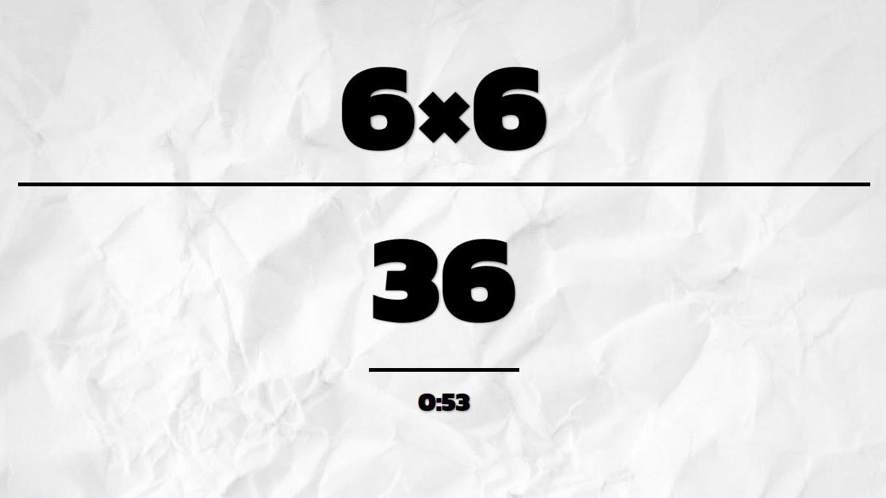
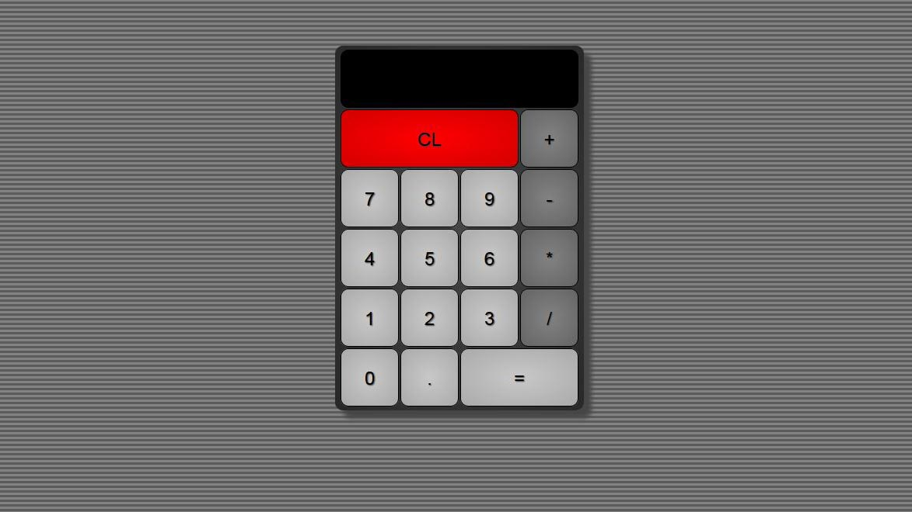

DOUG DRYBURGH
- WEB DEVELOPER -
ABOUT
Hello! My name is Doug and I am a studying web developer. Welcome to my portfolio.
Since my first introduction to HTML in high school I've been hooked. In 2016 I took the plunge and decided to make a career change into web development.
My focus began by updating my front end development skills. I have refreshed my HTML and CSS knowledge while applying JavaScript and jQuery to my projects. I am now rounding out my knowledge by studying back end principles using Node and the MEAN stack.
I've come this far thanks to passion and some excellent online resources. Fundamental in my education has been Free Code Camp and its forum full of extremely helpful campers. I've also been involved in study groups and have developed my own projects for both practice and fun.
I am ready to take the next step and find an entry-level position in the industry. I'm hungry for knowledge and know this would be the most effective way for me to continue learning and improving. My enthusiasm and passion will be a great addition to your team!
Why should you hire me?
- Experienced with: HTML, CSS, JavaScript, jQuery, Bootstrap, Git, Website Deployment and Hosting;
- Knowledgeable with: Wordpress, Photoshop;
- Learning: Node and the MEAN stack;
- Extremely motivated, and eager to learn more;
- Professional experience working with clients;
- I make excellent Spotify play lists.
Full work experience available here
Portfolio
Pura Vida Photography

I have been passionate about photography for nearly a decade. This is another example of an area I've successfully self studied and have ultimately freelanced in. I designed and built this website to showcase my favourite work.
With this design I utilized CSS transitions to make a pleasing slide show on the homepage. In addition I modified and implemented the blueimp gallery plug-in for my galleries as well as used JavaScript to animate a slide-out menu. The website is fully responsive and looks professional on all platforms.
Simon Says

This assignment required building a Simon style memory game. There were many project requirements including: having two different difficulty modes and adding simple audio. Also important was that it look good on different sized viewports.
I utilized CSS flexbox for the first time. In addition I integrated two add-ons that allows for colour animation through the jQuery animate method, as well as animating the toggleClass method.
Word Scramble

This was a self assigned passion project. I wanted further practice with jQuery combined with the challenge of validating the user's input. The app ended up being educational for myself and the users!
This project made more use of CSS flexbox, which has become an important tool for me. A fundamental part of the app is validating the user's input to determine if they submitted a correct word. I sourced a word list, and created a function to accomplish this.
More Projects
Mad Minute
The inspiration for this project came from a primary school exercise my teacher used to have us do. We would be given a sheet of math problems and would have to complete as many as possible in one minute. I've recreated this exercise in a web app.
The program will randomly generate a series of addition, subtraction, multiplication, or division problems. The code will verify the answer to let the user know how well they've done at the end. This project can easily be scaled to include different levels of difficulty in the future.
Calculator
This app allows the user to complete basic arithmetic functions. It allows addition, subtraction, multiplication and division.
Features include being able to chain multiple operations, use a decimal place, as well as integrating keyboard input.
Tic Tac Toe
This fun project required building a Tic Tac Toe game. I'm proud of the design and feel of the game but the real challenge was to design the computer's AI.
I started first with a 'noob' mode in which the computer chooses at random. Once I understood this process I then implemented a 'medium' mode in which the computer uses far greater logic to try and best the player.
Pomodoro Clock
In this FCC project I designed a countdown timer with a sleek and minimal interface.
The features allow you to choose a task length between 1-90 minutes, with a break interval of 1-30 minutes. The app will display the remaining time in the session/break. A progress bar also displays the percentage of the session left. Alongside this I added some animation to make the app sexier.
Local Weather
This was an early FCC project. The objective was to utilize the open weather api in order to show the weather in the user's current location.
I used a second API to determine the user's location based on their IP address. With this information I am able to return the weather conditions. I customized the design with backgrounds that illustrate the weather conditions and the app looks great on both desktop and mobile platforms.
Random Quote Machine

This Free Code Camp assignment was my first introduction to using an API. I utilized the forismatic api in order to show a randomly generated inspiring quote. An additional requirement was to provide the functionality for the user to tweet that quote right from the page. I used CSS gradients to further set a positive tone to the page.
Wikipedia Viewer
In this Free Code Camp assignment I was required to build a page utilizing the MediaWiki API. The requirements included being able to search for any topic, and return the results from Wikipedia. In addition the user was to be able to click a button to see a random article. The page was customized further with some aesthetically pleasing CSS animations.